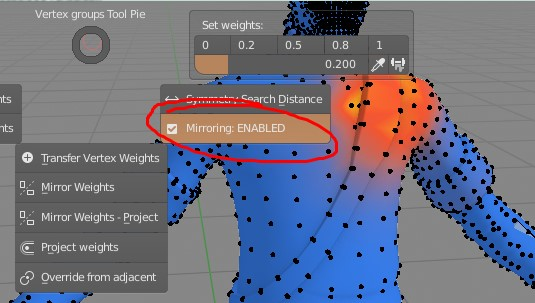
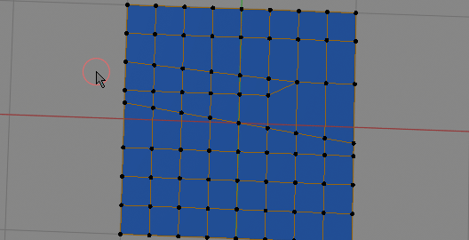

Most of the operators in Weight Paint Tools (WPT) are working with symmetry, which can be enabled globally in ctrl+X pie menu: 
- When you work with WPT on one side of mesh eg. on left 'vert_group.l', the right 'vert_group.r' weights will be adjusted too automatically,
- If you work on bones that are placed in the middle like spine bones, the addon will symmetrize both sides of mesh.
Symmetry Search Distance¶
 Increasing symmetry search distance (red circles) gives more vertices pairs, but with too big value, the result is worsening Set search distance for finding mirrored vertices pairs. Bigger search distance makes it easier to find corresponding mirrored vertices, but too big value may return vertices that should not be actually considered a pair. The distance can be adjusted with modal 'Symmetry Search Distance' operator - visible on image above.
Fixing symmetry¶
To manually symmetrize selected vertices you can use:
- Mirror Weights - when you topology is mostly symmetrical (with small differences between left and right side)
- Mirror Project Weights - when topology is not symmetrical